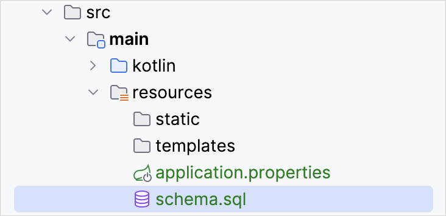
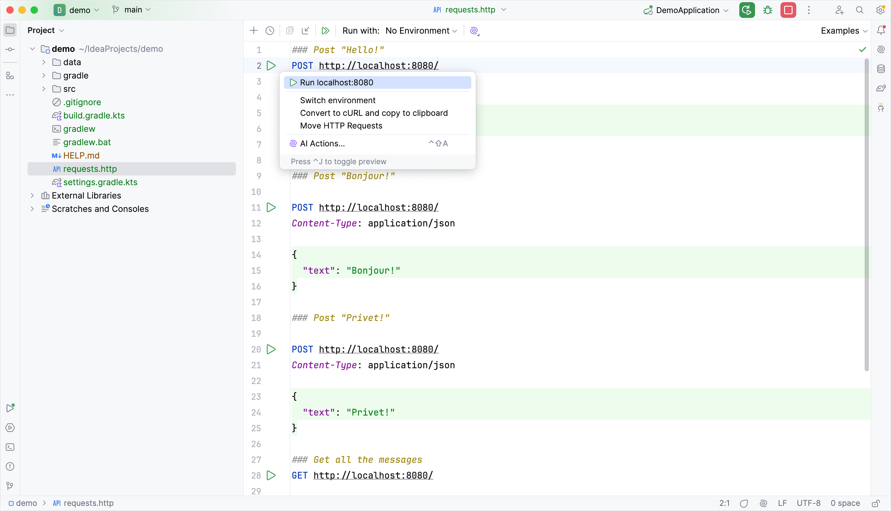
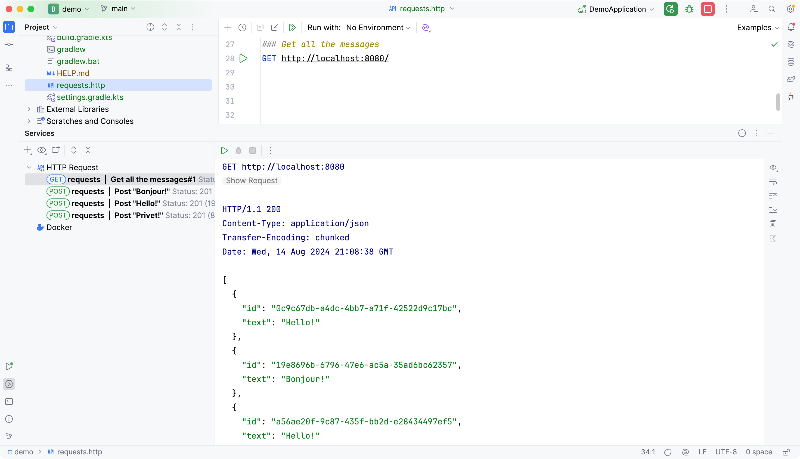
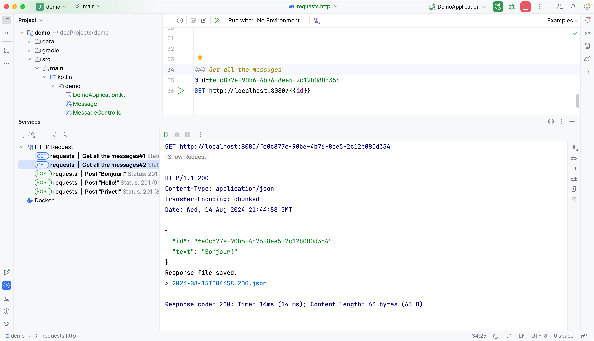

In this part of the tutorial, you'll add and configure a database to your project using JDBC. In JVM applications, you use JDBC to interact with databases. For convenience, the Spring Framework provides the
JdbcTemplate
class that simplifies the use of JDBC and helps to avoid common errors.
Add database support
The common practice in Spring Framework based applications is to implement the database access logic within the so-called
service
layer – this is where business logic lives. In Spring, you should mark classes with the
@Service
annotation to imply that the class belongs to the service layer of the application. In this application, you will create the
MessageService
class for this purpose.
In the same package, create the
MessageService.kt
file and the
MessageService
class as follows:
// MessageService.kt
package demo
import org.springframework.stereotype.Service
import org.springframework.jdbc.core.JdbcTemplate
import java.util.*
@Service
class MessageService(private val db: JdbcTemplate) {
fun findMessages(): List<Message> = db.query("select * from messages") { response, _ ->
Message(response.getString("id"), response.getString("text"))
}
fun save(message: Message): Message {
db.update(
"insert into messages values ( ?, ? )",
message.id, message.text
)
return message
}
}
Constructor argument and dependency injection – (private val db: JdbcTemplate)
A class in Kotlin has a primary constructor. It can also have one or more
secondary constructors
. The
primary constructor
is a part of the class header, and it goes after the class name and optional type parameters. In our case, the constructor is
(val db: JdbcTemplate)
.
val db: JdbcTemplate
is the constructor's argument:
@Service
class MessageService(private val db: JdbcTemplate)
Trailing lambda and SAM conversion
The
findMessages()
function calls the
query()
function of the
JdbcTemplate
class. The
query()
function takes two arguments: an SQL query as a String instance, and a callback that will map one object per row:
db.query("...", RowMapper { ... } )
The
RowMapper
interface declares only one method, so it is possible to implement it via lambda expression by omitting the name of the interface. The Kotlin compiler knows the interface that the lambda expression needs to be converted to because you use it as a parameter for the function call. This is known as
SAM conversion in Kotlin
:
db.query("...", { ... } )
After the SAM conversion, the query function ends up with two arguments: a String at the first position, and a lambda expression at the last position. According to the Kotlin convention, if the last parameter of a function is a function, then a lambda expression passed as the corresponding argument can be placed outside the parentheses. Such syntax is also known as
trailing lambda
:
db.query("...") { ... }
Underscore for unused lambda argument
For a lambda with multiple parameters, you can use the underscore
_
character to replace the names of the parameters you don't use.
Hence, the final syntax for query function call looks like this:
Update
MessageController.kt
to use the new
MessageService
class:
// MessageController.kt
package demo
import org.springframework.http.ResponseEntity
import org.springframework.web.bind.annotation.GetMapping
import org.springframework.web.bind.annotation.PostMapping
import org.springframework.web.bind.annotation.RequestBody
import org.springframework.web.bind.annotation.RequestMapping
import org.springframework.web.bind.annotation.RestController
import java.net.URI
@RestController
@RequestMapping("/")
class MessageController(private val service: MessageService) {
@GetMapping
fun listMessages() = service.findMessages()
@PostMapping
fun post(@RequestBody message: Message): ResponseEntity<Message> {
val savedMessage = service.save(message)
return ResponseEntity.created(URI("/${savedMessage.id}")).body(savedMessage)
}
}
@PostMapping annotation
The method responsible for handling HTTP POST requests needs to be annotated with
@PostMapping
annotation. To be able to convert the JSON sent as HTTP Body content into an object, you need to use the
@RequestBody
annotation for the method argument. Thanks to having Jackson library in the classpath of the application, the conversion happens automatically.
ResponseEntity
ResponseEntity
represents the whole HTTP response: status code, headers, and body.
Using the
created()
method you configure the response status code (201) and set the location header indicating the context path for the created resource.
Update the MessageService class
The
id
for
Message
class was declared as a nullable String:
data class Message(val id: String?, val text: String)
It would not be correct to store the
null
as an
id
value in the database though: you need to handle this situation gracefully.
Update your code of the
MessageService.kt
file to generate a new value when the
id
is
null
while storing the messages in the database:
// MessageService.kt
package demo
import org.springframework.stereotype.Service
import org.springframework.jdbc.core.JdbcTemplate
import org.springframework.jdbc.core.query
import java.util.UUID
@Service
class MessageService(private val db: JdbcTemplate) {
fun findMessages(): List<Message> = db.query("select * from messages") { response, _ ->
Message(response.getString("id"), response.getString("text"))
}
fun save(message: Message): Message {
val id = message.id ?: UUID.randomUUID().toString() // Generate new id if it is null
db.update(
"insert into messages values ( ?, ? )",
id, message.text
)
return message.copy(id = id) // Return a copy of the message with the new id
}
}
Elvis operator – ?:
The code
message.id ?: UUID.randomUUID().toString()
uses the
Elvis operator (if-not-null-else shorthand)
?:
. If the expression to the left of
?:
is not
null
, the Elvis operator returns it; otherwise, it returns the expression to the right. Note that the expression on the right-hand side is evaluated only if the left-hand side is
null
.
The application code is ready to work with the database. It is now required to configure the data source.
Configure the database
Configure the database in the application:
Create
schema.sql
file in the
src/main/resources
directory. It will store the database object definitions:

Update the
src/main/resources/schema.sql
file with the following code:
-- schema.sql
CREATE TABLE IF NOT EXISTS messages (
id VARCHAR(60) PRIMARY KEY,
text VARCHAR NOT NULL
);
It creates the
messages
table with two columns:
id
and
text
. The table structure matches the structure of the
Message
class.
Open the
application.properties
file located in the
src/main/resources
folder and add the following application properties:
These settings enable the database for the Spring Boot application.
See the full list of common application properties in the
Spring documentation
.
Add messages to database via HTTP request
You should use an HTTP client to work with previously created endpoints. In IntelliJ IDEA, use the embedded HTTP client:
Run the application. Once the application is up and running, you can execute POST requests to store messages in the database.
Create the
requests.http
file in the project root folder and add the following HTTP requests:
### Post "Hello!"
POST http://localhost:8080/
Content-Type: application/json
{
"text": "Hello!"
}
### Post "Bonjour!"
POST http://localhost:8080/
Content-Type: application/json
{
"text": "Bonjour!"
}
### Post "Privet!"
POST http://localhost:8080/
Content-Type: application/json
{
"text": "Privet!"
}
### Get all the messages
GET http://localhost:8080/
Execute all POST requests. Use the green
Run
icon in the gutter next to the request declaration. These requests write the text messages to the database:

Execute the GET request and see the result in the
Run
tool window:

Alternative way to execute requests
You can also use any other HTTP client or the cURL command-line tool. For example, run the following commands in the terminal to get the same result:
Extend the functionality of the application to retrieve the individual messages by id.
In the
MessageService
class, add the new function
findMessageById(id: String)
to retrieve the individual messages by id:
// MessageService.kt
package demo
import org.springframework.stereotype.Service
import org.springframework.jdbc.core.JdbcTemplate
import org.springframework.jdbc.core.query
import java.util.*
@Service
class MessageService(private val db: JdbcTemplate) {
fun findMessages(): List<Message> = db.query("select * from messages") { response, _ ->
Message(response.getString("id"), response.getString("text"))
}
fun findMessageById(id: String): Message? = db.query("select * from messages where id = ?", id) { response, _ ->
Message(response.getString("id"), response.getString("text"))
}.singleOrNull()
fun save(message: Message): Message {
val id = message.id ?: UUID.randomUUID().toString() // Generate new id if it is null
db.update(
"insert into messages values ( ?, ? )",
id, message.text
)
return message.copy(id = id) // Return a copy of the message with the new id
}
}
Add the new
index(...)
function with the
id
parameter to the
MessageController
class:
// MessageController.kt
package demo
import org.springframework.http.ResponseEntity
import org.springframework.web.bind.annotation.GetMapping
import org.springframework.web.bind.annotation.PathVariable
import org.springframework.web.bind.annotation.PostMapping
import org.springframework.web.bind.annotation.RequestBody
import org.springframework.web.bind.annotation.RequestMapping
import org.springframework.web.bind.annotation.RestController
import java.net.URI
@RestController
@RequestMapping("/")
class MessageController(private val service: MessageService) {
@GetMapping
fun listMessages() = ResponseEntity.ok(service.findMessages())
@PostMapping
fun post(@RequestBody message: Message): ResponseEntity<Message> {
val savedMessage = service.save(message)
return ResponseEntity.created(URI("/${savedMessage.id}")).body(savedMessage)
}
@GetMapping("/{id}")
fun getMessage(@PathVariable id: String): ResponseEntity<Message> =
service.findMessageById(id).toResponseEntity()
private fun Message?.toResponseEntity(): ResponseEntity<Message> =
// If the message is null (not found), set response code to 404
this?.let { ResponseEntity.ok(it) } ?: ResponseEntity.notFound().build()
}
Retrieving a value from the context path
The message
id
is retrieved from the context path by the Spring Framework as you annotated the new function by
@GetMapping("/{id}")
. By annotating the function argument with
@PathVariable
, you tell the framework to use the retrieved value as a function argument. The new function makes a call to
MessageService
to retrieve the individual message by its id.
vararg argument position in the parameter list
The
query()
function takes three arguments:
SQL query string that requires a parameter to run
id
, which is a parameter of type String
RowMapper
instance is implemented by a lambda expression
The second parameter for the
query()
function is declared as a
variable argument
(
vararg
). In Kotlin, the position of the variable arguments parameter is not required to be the last in the parameters list.
Extension function with nullable receiver
Extensions can be defined with a nullable receiver type. If the receiver is
null
, then
this
is also
null
. So when defining an extension with a nullable receiver type, it is recommended performing a
this == null
check inside the function body.
You can also use the null-safe invocation operator (
?.
) to perform the null check as in the
toResponseBody
function above:
this?.let { ResponseEntity.ok(it) }
ResponseEntity
ResponseEntity
represents the HTTP response, including the status code, headers, and body. It is a generic wrapper that allows you to send customized HTTP responses back to the client with more control over the content.
Here is a complete code of the application:
// DemoApplication.kt
package demo
import org.springframework.boot.autoconfigure.SpringBootApplication
import org.springframework.boot.runApplication
@SpringBootApplication
class DemoApplication
fun main(args: Array<String>) {
runApplication<DemoApplication>(*args)
}
// Message.kt
package demo
data class Message(val id: String?, val text: String)
// MessageService.kt
package demo
import org.springframework.stereotype.Service
import org.springframework.jdbc.core.JdbcTemplate
import org.springframework.jdbc.core.query
import java.util.*
@Service
class MessageService(private val db: JdbcTemplate) {
fun findMessages(): List<Message> = db.query("select * from messages") { response, _ ->
Message(response.getString("id"), response.getString("text"))
}
fun findMessageById(id: String): Message? = db.query("select * from messages where id = ?", id) { response, _ ->
Message(response.getString("id"), response.getString("text"))
}.singleOrNull()
fun save(message: Message): Message {
val id = message.id ?: UUID.randomUUID().toString()
db.update(
"insert into messages values ( ?, ? )",
id, message.text
)
return message.copy(id = id)
}
}
// MessageController.kt
package demo
import org.springframework.http.ResponseEntity
import org.springframework.web.bind.annotation.GetMapping
import org.springframework.web.bind.annotation.PathVariable
import org.springframework.web.bind.annotation.PostMapping
import org.springframework.web.bind.annotation.RequestBody
import org.springframework.web.bind.annotation.RequestMapping
import org.springframework.web.bind.annotation.RestController
import java.net.URI
@RestController
@RequestMapping("/")
class MessageController(private val service: MessageService) {
@GetMapping
fun listMessages() = ResponseEntity.ok(service.findMessages())
@PostMapping
fun post(@RequestBody message: Message): ResponseEntity<Message> {
val savedMessage = service.save(message)
return ResponseEntity.created(URI("/${savedMessage.id}")).body(savedMessage)
}
@GetMapping("/{id}")
fun getMessage(@PathVariable id: String): ResponseEntity<Message> =
service.findMessageById(id).toResponseEntity()
private fun Message?.toResponseEntity(): ResponseEntity<Message> =
this?.let { ResponseEntity.ok(it) } ?: ResponseEntity.notFound().build()
}
Run the application
The Spring application is ready to run:
Run the application again.
Open the
requests.http
file and add the new GET request:
### Get the message by its id
GET http://localhost:8080/id
Execute the GET request to retrieve all the messages from the database.
In the
Run
tool window copy one of the ids and add it to the request, like this:
### Get the message by its id
GET http://localhost:8080/f16c1d2e-08dc-455c-abfe-68440229b84f
Execute the GET request and see the result in the
Run
tool window:

Next step
The final step shows you how to use more popular connection to database using Spring Data.